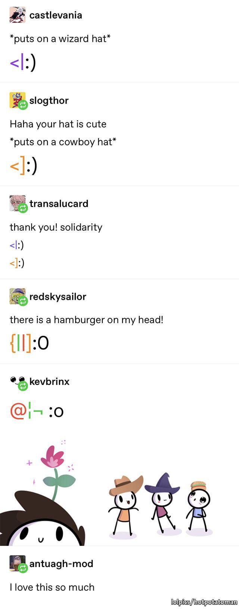

Emoticons are punctuation marks, letters, and numbers used to create pictorial icons that generally display an emotion or sentiment. (That’s actually where the portmanteau “emoticon” comes from: emotional icon.) Oh, and because of the limits of our keyboard, most emoticons need to be read sideways.
The emoticon came into being after a joke went wrong at Carnegie Mellon University in 1982. A gag about a fake mercury spill posted to an online message board sent the university into a tizzy, and because of this confusion, Dr. Scott E. Fahlman suggested that jokes and nonjokes be marked by two sets of characters we now recognize as standard emoticons: the smiley face :-) and the frowning face :-(. After this, emoticons were a big hit among Internet users.
Here’s a list of emoticons I feel the most attached to, and what I mean when I use them.
- :3
- The cat face modifier. Whenever a nya fits the occasion.
- :)
- I am up to no good, but hiding it. This is a less overt version of >:) or >:3
- :-)
- I am such a good natured old fellow! Ho ho ho!
- :(
- Sad times. Usually when something bad happens in a video game. I am mostly hoping to express a wet cat demeanor which might snap my teammates out of whatever inting is to occur. Can’t make the cat more sad!
- :0
- woah!!!! (Lowercase w. If I need to express much excitement I will vocalize, possibly with capslock and/or other modifiers, instead of only using an emoticon)
- :/
- Siigh. This sucks man.
- :D
- yay!! (Lowercase.)
- D:
- waughhhhhh D: (Lowercase.)
- [|87
- Sometimes I pull this out when I feel like showing off a party trick. It’s a plague doctor! Got this one from tumblr. Alternatively, this style of hat is cool: Σ|87 (thanks reddit)
- <|:) and <]:) and {||]:0 and @¦¬ :o
- Continuing on the theme of novelty emoticons, here’s some from https://www.tumblr.com/thatsridicarus/184818824517.1 A wizard, a cowboy, a burger, and a flower hat.
Notes
-
1 Here’s a backup in case the link dies:
